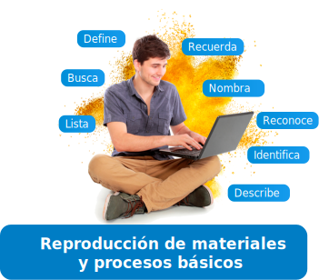

Es el nivel más bajo de la taxonomía pero es crucial para el aprendizaje. Permite evocar hechos, procesos, modelos de una estructura o de un orden, ideas o datos sin necesidad de entender. Se muestra material aprendido previamente mediante el recuerdo de términos, conceptos básicos y respuestas.
Resultado de aprendizaje:
Nivel inferior
Enfocados en el Conocimiento

Estrategia o metodología de aprendizaje
Técnica de evaluación
Instrumento de evaluación
Evidencia de aprendizaje
Aprendizaje cooperativo.
Aprendizaje basado en tareas.
Clase invertida.
Aprendizaje basado en juegos.
Técnica de pruebas o interrogatorio
Pruebas escritas objetivas: preguntas de selección múltiple, completar, asociar, ordenar, respuesta breve, discriminar, analogía, entre otras.
Pruebas orales: grabaciones, preguntas, exposición, monólogo, entre otros.
Técnica de tareas
que requieran reconocer hechos, términos y conceptos, tales como:
resumen, diario, reporte de lecturas, líneas de tiempo, fichas bibliográficas, entre otros.